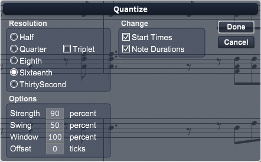

Choose this command to quantize selected notes, that is, to round off their start times and durations to even beats so they can display reasonably on a staff or play back with precision, rather than with irregularities, the way humans play them. When you choose the Quantize command, Overture produces the Quantize dialog box.

In this section of the Quantize dialog box specify the granularity of the quantization. You can use any value from a half note down to a thirty-second note triplet. Select a resolution that matches the smallest note in the region you are quantizing. If you are quantizing a run of sixteenth notes, use a sixteenth note as the resolution.
In this section of the Quantize dialog box, choose to move the start times of notes, their durations, or both.
In this section specify how, exactly, you want the selected notes quantized, in several dimensions.
Strength. The human ear is tuned to the slight imperfections we hear from most musicians. If you quantize a song so that all notes are perfectly in position, it may end up sounding mechanical or rigid. To avoid this, Overture lets you adjust the strength of the adjustment. A strength of 100 percent indicates that all notes are moved so that they are in perfect time, while a strength of 50 percent means that all notes are moved half-way towards the desired position. This lets you tighten up the timing as much as you want, without going too far.
Swing. Many songs do not have notes positioned perfectly evenly. For example, songs with a swing feel, though they may be written all using eighth notes, are often played more like eighth note triplets, with the first note extended and the second one shortened. The swing option lets you distort the timing so each pair of notes is spaced unevenly, giving the quantized material a swing feel.
A swing value of 50 percent (the default) means that the timing is even. A value of 67 percent means that the time between the first and second evenly spaced notes is twice as long as the time between the second and third.
Window. When you quantize some portion of a song, notes that are very far from the specified timing should probably not be moved at all. The window, or sensitivity setting, lets you choose how close to the resolution a note must be for quantize to move it.
A window of 100 percent includes all notes, and guarantees that all notes will shift to lie exactly on the resolution timing. The window extends half the resolution distance before and after the quantization point. A window of 50 percent extends only a quarter of the way toward the adjacent quantization points.
Offset. Normally, the resolution grid is aligned evenly with the start of measures and beats. As an option, you can shift the grid earlier or later by any number of clock ticks. If the resolution is a quarter note, and you've set the offset to +3 ticks, then a note that is originally near the beat would be moved three ticks beyond the beat boundary.
To quantize selected notes:
Overture quantizes the selected notes in your score.
This command affects start and end times of notes only, not the notated note value. To change note value, see Transcribe.